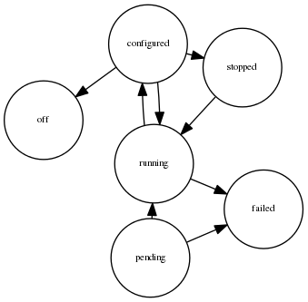

IM XML-RPC API¶
IM Service can be accessed through the API that follows the XML-RPC specification. The port number and the security settings are controlled by the options listed in XML-RPC API.
The last parameter in every call refers to the credentials for the IM Service, the VMRC and cloud providers. Every credential is represented as a struct datatype, whose keys and values are described in auth-file. Then the parameter is an array of these structs.
This is the list of method names:
- GetInfrastructureList
parameter 0: auth: array of structs ok response: [true, infIds: array of integers] fail response: [false, error: string] Return the ID associated to the infrastructure created by the user.
- CreateInfrastructure
parameter 0: radl: string parameter 1: auth: array of structs ok response: [true, infId: integer] fail response: [false, error: string] Create and configure an infrastructure with the requirements specified in the RADL document passed as string. Return the ID associated to the created infrastructure.
- GetInfrastructureInfo
parameter 0: infId: integer parameter 1: auth: array of structs ok response: [true, struct(cont_out: string, vm_list: array of integers)] fail response: [false, error: string] Return in vm_list a list of IDs associated to the virtual machine of the infrastructure with ID infId. If the contextualization process has finished, cont_out may have a message indicating why the process failed.
- GetVMInfo
parameter 0: infId: integer parameter 1: vmId: string parameter 2: auth: array of structs ok response: [true, struct(info: string, cloud: string, state: string)] fail response: [false, error: string] Return a struct with information about the virtual machine with ID vmId in the infrastructure with ID infId. The returned struct is composed by
- info, information about the virtual machine in RADL format;
- cloud, information about the cloud; and
- state, state of the virtual machine.
The state can be
- pending, launched, but still in initialization stage;
- running, created successfully and running, but still in the configuration stage;
- configured, running and contextualized;
- stopped, stopped or suspended;
- off, shutdown or removed from the infrastructure;
- failed, an error happened during the launching or the contextualization; or
- unknown, unable to obtain the status.
The next figure shows a state diagram of virtual machine status.

- AlterVM
parameter 0: infId: integer parameter 1: vmId: string parameter 2: radl: string parameter 3: auth: array of structs ok response: [true, struct(info: string, cloud: string, state: string)] fail response: [false, error: string] Change the features of the virtual machine with ID vmId in the infrastructure with with ID infId, specified by the RADL radl. Return a struct with information about the virtual machine, like GetVMInfo.
- DestroyInfrastructure
parameter 0: infId: integer parameter 1: auth: array of structs ok response: [true, string of length zero] fail response: [false, error: string] Undeploy all the virtual machines associated to the infrastructure with ID infId.
- AddResource
parameter 0: infId: integer parameter 1: radl: string parameter 2: auth: array of structs ok response: [true, infId: integer] fail response: [false, error: string] Add the resources specified in radl to the infrastructure with ID infId. The deploy instructions in the radl must refer to systems already defined. If all the systems defined in radl are new, they will be added. Otherwise the new systems defined will be ignored.
- RemoveResource
parameter 0: infId: integer parameter 1: vmIds: string parameter 2: auth: array of structs ok response: [true, infId: integer] fail response: [false, error: string] Updeploy the virtual machines with IDs in vmIds associated to the infrastructure with ID infId. The different virtual machine IDs in vmIds are separated by commas.
- StopInfrastructure
parameter 0: infId: integer parameter 1: auth: array of structs ok response: [true, string of length zero] fail response: [false, error: string] Stop (but do not undeploy) all the virtual machines associated to the infrastructure with ID infId. They can resume by StartInfrastructure.
- StartInfrastructure
parameter 0: infId: integer parameter 1: auth: array of structs ok response: [true, string of length zero] fail response: [false, error: string] Resume all the virtual machines associated to the infrastructure with ID infId, previously stopped by StopInfrastructure.
- Reconfigure
parameter 0: infId: integer parameter 1: radl: string parameter 2: auth: array of structs ok response: [true, string of length zero] fail response: [false, error: string] Update the infrastructure with ID infId using the configuration sections in the RADL radl. Some virtual machines associated to the infrastructure may be reconfigured.